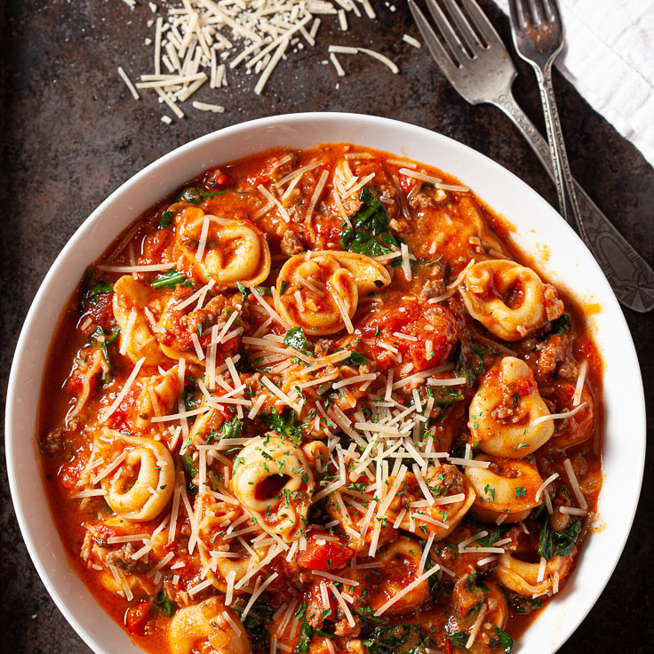

Tortellini De Lucas

Tortellini with red sauce
This tortellini will absolutely knock your socks
off. It is a rich blend of italian homemade tortellini, with an
absolute stunning array of flavors. This pasta will change the way you
get out of bed in the morning
Ingredients
- Tortellini
- Red sauce
- Butter
- Monterey Jack Cheese
Steps
- Boil Water and add salt
- Add tortellini when boiling
- Cook for 8 minutes and strain
- Cover with sauce and serve
- Enjoy!